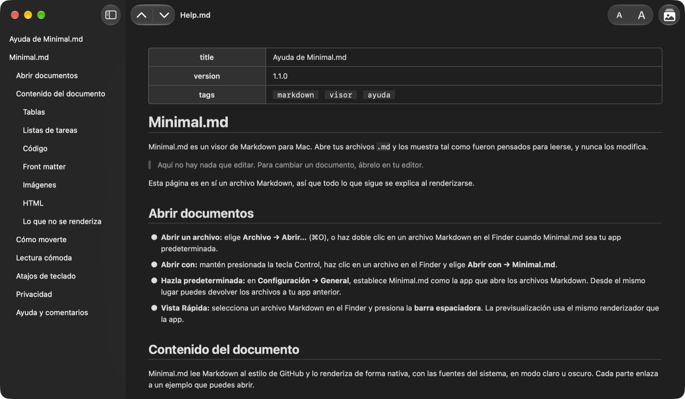

Visor Markdown y Vista Rápida
Abre un archivo Markdown y simplemente léelo.
Minimal.md abre los archivos .md que escriben tú y tus agentes de IA, y los muestra tal como fueron pensados para leerse, sin modificarlos nunca.

Funciones
Sin editor, sin sincronización, sin cuenta.
El documento con renderizado nativo y las fuentes del sistema, en modo claro u oscuro.
Leer, no editar
Minimal.md nunca escribe en tus archivos. Abre Markdown desde el Finder o con Abrir con, o haz que sea tu app predeterminada para Markdown en Configuración → General.
Trabaja con tus agentes de IA
Sigue el archivo en vivo mientras el agente lo escribe.
Nunca choca con un agente que edita el mismo archivo.
Vista Rápida
Selecciona un archivo Markdown en el Finder y presiona la barra espaciadora para leerlo renderizado, sin abrir la app.
Privado por diseño
Sin conexiones de red ni datos recopilados, y las imágenes remotas nunca se cargan. Solo lee los archivos que abres y las carpetas que compartes.
Capturas de pantalla
Un vistazo de cerca.
Lectura
Hecho para leer.
macOS nativo, con los atajos que esperas.
Tabla de contenido
La barra lateral muestra los encabezados del documento.
Haz clic en uno para ir ahí.
⌃⌘S
Encabezado por encabezado
Ve al encabezado anterior o siguiente con las flechas de la barra de herramientas.
Salta al principio o al final del documento.
⌘↑ ⌘↓ ⌥⌘↑ ⌥⌘↓
Enlaces que funcionan
Un enlace a un encabezado te lleva hasta él.
Un enlace a otro archivo Markdown lo abre.
Los enlaces web se abren en tu navegador.
Comodidad
Agranda o reduce el texto desde la barra de herramientas: todas las ventanas y Vista Rápida se ajustan.
Claro u oscuro: Minimal.md sigue la apariencia de tu Mac.
⌘+ ⌘− ⌘0
Imágenes
Las imágenes guardadas junto a tu documento aparecen en su lugar.
Las imágenes web nunca se cargan: ves un marcador con la descripción de la imagen, no un hueco.
⌥⌘L
Contexto
Selecciona texto para usar todo lo que ofrece macOS: Buscar, Traducir, Herramientas de escritura y Servicios.
¿Necesitas todo el texto? Edición → Copiar documento como Markdown copia todo el código fuente.
⇧⌘C
Etiquetas del App Store
Privacidad y accesibilidad.
Funciones admitidas en Mac
- VoiceOver
- Control por voz
- Interfaz oscura
- Diferenciación no sólo con color
- Suficiente contraste
- Movimiento reducido
Idiomas
- Inglés
- Francés
- Alemán
- Italiano
- Ruso
- Español
¿Quieres Minimal.md en tu idioma? Avísanos.
Novedades
Consulta qué cambió en cada versión en el registro de cambios (en inglés).
Beta pública
¿Quieres las nuevas versiones antes? Únete a la beta (en inglés).